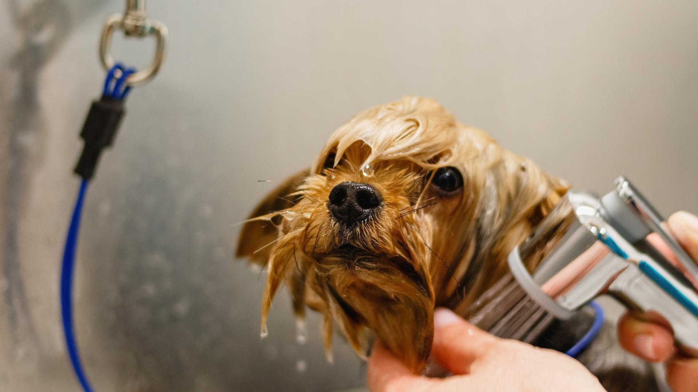

We have a wide range of grooming services available at Furry Friends and we will do almost anything to accommodate your dogs needs. Our award-winning groomers have years of experience, and they are committed to giving your dog the best experience possible. In addition to this we also pride ourselves on our affordability! We are committed to keeping our services as affordable as possible. For information on pricing please visit our booking page.
For small dog owners we offer a specialised service for your dog in order to keep them comfortable and happy. We understand that smaller dogs are more prone to anxiety while being groomed and in order to ease their anxiety we offer ear and face covers if needed. We also have smaller baths for your dog, so they feel more comfortable.
